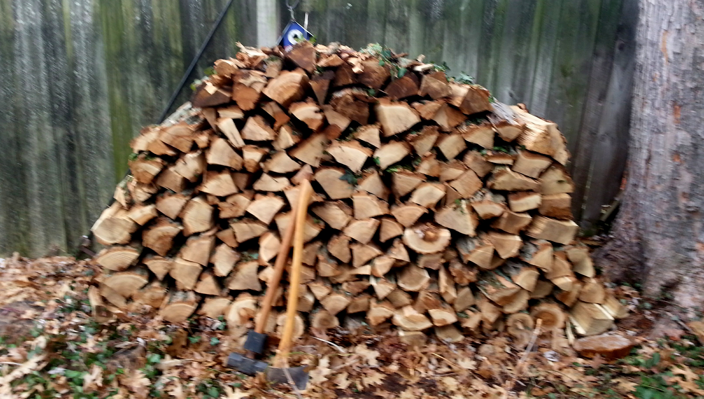
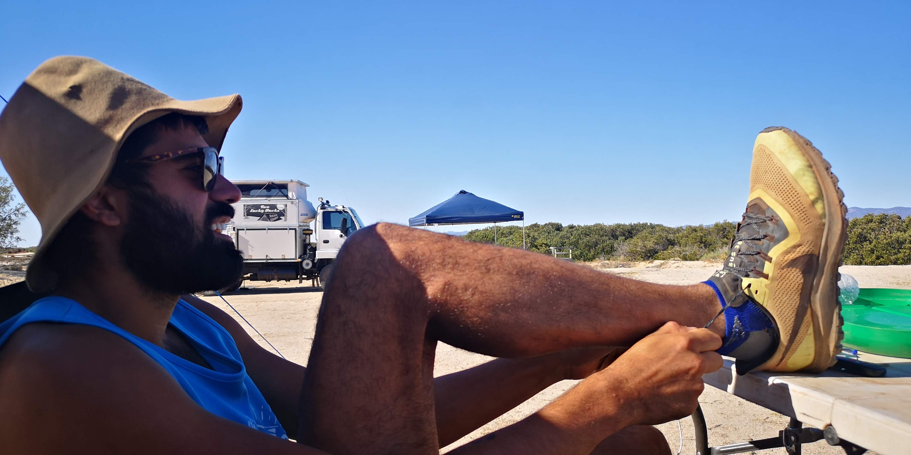
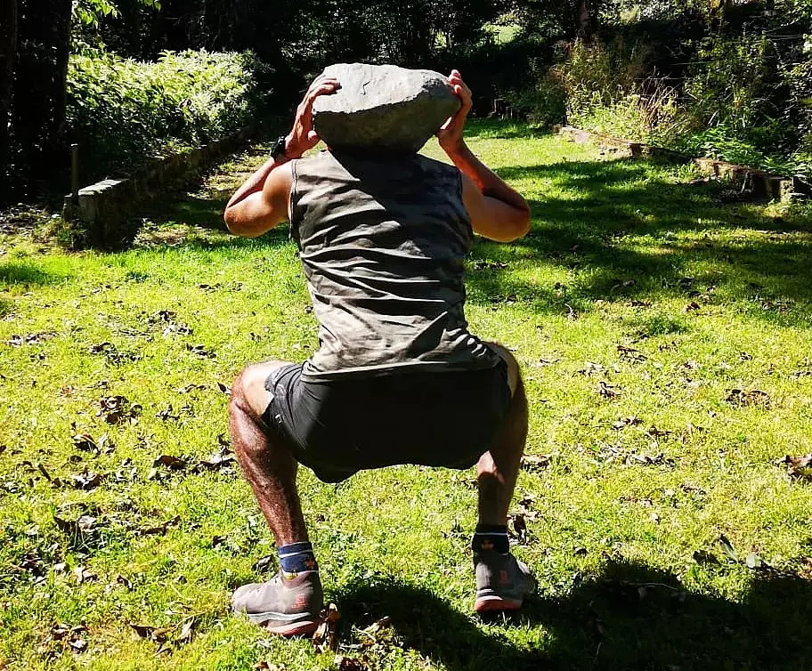
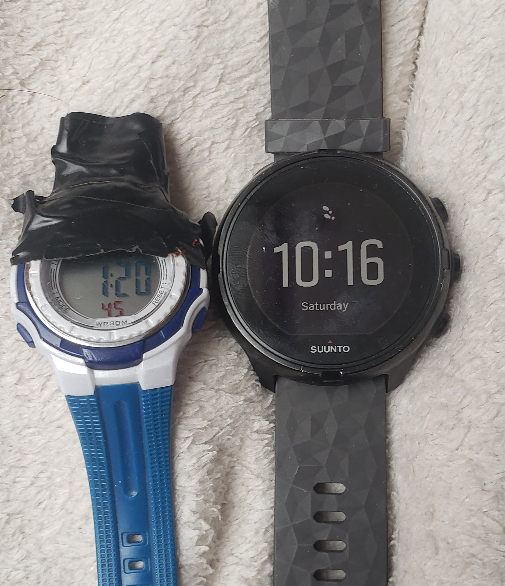

For most runners, winter means off-season. With no races on the horizon, now is the time to Build That Aerobic Base.
AEROBIC BASE: The physiological state in an endurance athlete brought about by extensive training at low-to-moderate
intensities. This training enhances the ability of the trained muscles to produce energy aerobically and especially
using fat as the primary fuel. This training makes up the vast majority of an endurance athlete’s annual training
volume. It supports the higher-intensity training by allowing the athlete to recover faster from intense training and
races.-Training for the Uphill Athlete (p. 506)
Steve House, Scott Johnston, Kilian Jornet
Logging long hours on skis in Yellowstone National Park, Montana 2018
Overview
The idea is simple, accumulate distance and vert at low intensity, gradually increase the quantity, modulate between
hard and easy efforts, do some strength and cross training, stay consistent and disciplined. After 6-8 weeks you can add
specificity and intensity and you will find yourself fitter than ever.
When in doubt, go long and slow
Duration is undeniable. There is no substitute for time on feet. Stacking hours in low-gear increases work capacity and fatigue resistance. Its for good reason many of the best trail runners ski so
much. Other forms of cross training like cycling, climbing, hiking, and swimming are excellent as well, so long as the are supplemented with some running to hold the neuromuscular system accountable.

Splitting wood counts as aerobic activity and offers a robust metaphor for base building.
“Training is not the work you do, but the effect it has on your body.”
Its the body's ability to absorb the training which leads to gains in fitness. By modulating between hard
and easy efforts we give the body time to recover and adapt. Give yourself easy days following harder efforts. Give
yourself an easy week after consecutive progressive weeks. Listen to your body, but do the work (fatigue is never an
excuse! Just go easy) because consistency is paramount.
Too slow too much?
On most days resist the urge to push the pace. Do at least 80% of the weekly volume at low intensity, zone 1
and 2
see intensity discussion below. You may find the pace uncomfortably slow but this is the other side of the quality coin.
Resisting the urge to go fast is often harder than going fast. This does does not mean loafing around, stay light, use good form but keep the heart rate low. This type of running increases capillary density in the muscles, mitochondria
genesis, and primes the aerobic metabolic pathway which in turn will support higher intensity efforts down the road.
But to answer the question: yes. If 100% of the volume is slow you will get slow, therefore its imperative to execute some
fast workouts. You can do uphill intervals (erring on the side of long intervals 4-15 mins), 30s/30s, tempo
run, or just finish a long slow workout with some sprints. So long as you are activating the fast twitch muscle
fiber, no worries mate.

Lacing up the boots for another steady run in 40℃, Northern Territory, Australia 2019
Take Your Medecine
The base-build should be progressive. Its up to you to decide where to start but each week add 7-10% more volume from
the preceding week. You should be accumulating some fatigue, but not suffer from 'wrecked legs' because workouts are at
sustainable intensities. Its important to stay patient, aerobic adaptations take time to accrue. Do the work, stay the
path and results will come.
Example Base Build Week
for an athlete with 12hrs+ to train / week
|
am |
pm |
| Monday |
Recovery run / ski |
off |
| Tuesday |
1-2 hrs Z1 run / ski |
core / leg strength
|
| Wednesday |
Z3 intervals
or hill sprints
with warmup
and cool down |
mobility / stretching
|
| Thursday |
1-2 hrs Z1 with
some tempo |
off |
| Friday |
1-2 hrs Z1/2 run / ski
|
core / leg strength |
| Saturday |
Long run Z1-2
3hrs+
|
off |
| Sunday |
2hrs Z1/2 run / ski |
mobility / stretching |

No gym membership, no problem.
Strength and Such
Functional strength exercises are good for injury prevention. I do not advocate doing too much lifting unless
you have a background in this.
During my base build I do 2 sessions a week in the gym with 20 minutes of core exercise
and 20-30 minutes of leg work. I pick three or four of the following and do a circuit: squats, one-legged squats, split
squats, wall-sits, lunges, kettle-bell swings, box step up, box step down ect. (think one-legged exercises, glutes, hips, hamstrings). Its
best to start without weight and add it gradually through the build.
Fruits of Labor
After 6-8 weeks of mostly low intensity training, you will find that your aerobic speed has increased as has the
sustainable duration of this effort, marking an improvement in running economy (costs less to move faster). The aerobic
metabolism is operating efficiently and you can recover ever-quicker from hard efforts.
As races approach you can incorporate race simulation sessions, big vert days, or back to back
long days depending on the nature of the event.

Switching over from the trusty Casio to the Suunto 9, my first GPS watch in 2021
Intensity Technical Details Condensed
Collecting some training data is useful, but not compulsory. Look at the African runners, few of
which use a GPS watch. When we are talking about low-intensity-training (LIT) we are referring to zones 1 and 2 of a 5
zone model or zone 1 of a 3 zone model. These are paces
below your aerobic threshold, which is the inflection point where blood lactate begins to accumulate-not to be confused with lacate threshold, where lacate accumulates faster than the body can remove it.
LIT must feel sustainable, you can breathe through your nose and think clearly
(one trick I use is a little math test—at the current pace how long will it take to run 10 miles?), if these are
difficult you are going too hard. If you use a heart rate monitor, study how the heart rate climbs with increase
in effort and exercise duration, don't let it drift too high. After several weeks you will hopefully see a faster pace
at the same heart rate which resists drift as the session wears on.
Happy Training!